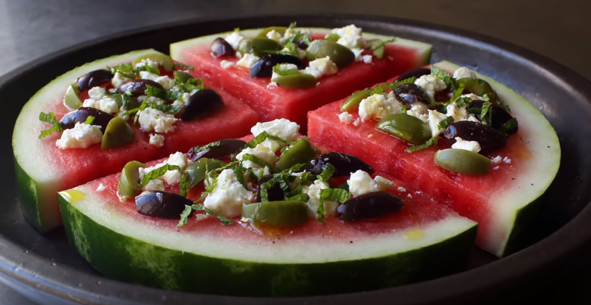

Chef John's Watermelon Pizza
John Armand Mitzewich, more commonly known as "Chef John", is an American chef known for publishing instructional cooking videos on the blog and YouTube channel Food Wishes, with over 930 million views on his channel. He regularly uploads cooking videos on his youtube channel "Food Wishes."
This is a recipe for Watermelon Pizza, an unconventional combination of sweet and salty ingredients, creating the world's ugliest yet equally intriguing "pizza."
Ingredients:
- 1 large seedless watermelon
- 1 1/2 cups crumbled feta cheese
- 1/2 cup sliced green olives
- 1/2 cup slived Kalamata olives
- 1/2 cup thinly sliced fresh mint leaves
- 1 pinch freshly ground black pepper to taste
- 2 tablespoons rice vinegar
- 2 tablespoon olive oil
Directions:
- Slice watermelon in half lengthwise, then each half lengthwise into quarters. Cut uniformly thick slices from the center of each equarter and place on plates or trays.
- Remove any of the soft, white seeds, and use the tip of a spoon to make small, shallow divots in the surface to help hold the toppings
- Scatter some feta cheese, olives, and mint over the slices and season lightly freshly ground black pepper. Drizzle each slice with a touch of rice vinegar and olive oil. Serve immediately or cover and refrigerate until needed.